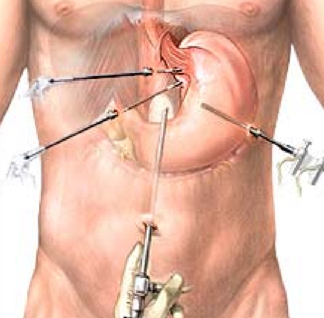

Funduplicatura tipo Nissen
La funduplicatura tipo Nissen es una cirugía utilizada para tratar el reflujo gastroesofágico severo (ERGE). En este procedimiento, la parte superior del estómago se envuelve completamente alrededor del esófago inferior para reforzar el esfínter esofágico y evitar que el ácido gástrico suba al esófago.
¿Cuándo se realiza?
- Cuando el tratamiento con medicamentos no controla los síntomas del reflujo.
- En pacientes con hernia hiatal acompañada de reflujo.
- En casos de complicaciones como esofagitis severa o estenosis esofágica.

¿Cómo se realiza?
Generalmente se realiza por laparoscopía. El cirujano hace pequeñas incisiones en el abdomen, inserta instrumentos quirúrgicos y una cámara, y envuelve la parte superior del estómago (fundus) alrededor del esófago. Esto fortalece el esfínter esofágico inferior y previene el reflujo.
Beneficios y recuperación
- Alivio significativo de los síntomas de ERGE.
- Disminución del uso de medicamentos antiácidos.
- Mejora en la calidad de vida.
- Recuperación rápida en la mayoría de los casos (7 a 10 días).
Especialistas involucrados
- Gastroenterólogo: diagnóstico y evaluación inicial.
- Cirujano general: realiza el procedimiento quirúrgico.
- Nutriólogo: seguimiento en la dieta postoperatoria.
← Volver al inicio